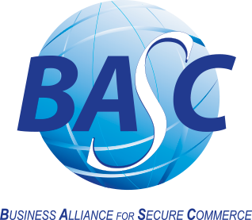

Integridad y Prevención
Mantener la integridad de nuestros procesos, previniendo delitos de corrupción, soborno y lavado de activos.
MIDECAR, en su calidad de Almacén de Depósito Temporal (ADT) autorizado por la autoridad aduanera, se compromete a proporcionar servicios de excelencia en el almacenamiento y gestión de mercancías, garantizando los más altos estándares de calidad y seguridad en todas nuestras operaciones. Nuestra política integrada se fundamenta en los siguientes principios:
Mantener la integridad de nuestros procesos, previniendo delitos de corrupción, soborno y lavado de activos.
Cumplir con todos los requisitos legales y reglamentarios aplicables a nuestras actividades.
Mejorar continuamente nuestro Sistema de Gestión Integrado, que incluye ISO 9001:2015 y BASC V6:2022, para garantizar la eficacia y eficiencia de nuestros servicios.
Promover la seguridad en el uso de tecnologías de la información, protegiendo los datos de nuestros clientes y la integridad de nuestros sistemas.
Fomentar una cultura de calidad y seguridad entre nuestros empleados y partes interesadas, asegurando la satisfacción del cliente y el logro de nuestros objetivos de calidad.
En MIDECAR Movimientos Internos de Carga Cía. Ltda. nos comprometemos a operar de manera ética y responsable, promoviendo el respeto por los derechos humanos y el bienestar de todos los individuos involucrados en nuestras operaciones. Esta política de responsabilidad social establece nuestros compromisos para prevenir el abuso laboral, la discriminación, el trabajo forzoso, el trabajo infantil y otras violaciones a los derechos humanos.
Implementar procedimientos claros para prevenir el abuso laboral en todas nuestras instalaciones y operaciones.
Fomentar un ambiente de trabajo inclusivo y diverso, libre de discriminación por motivos de raza, género, religión, orientación sexual, discapacidad u otras características personales.
Prohibir el trabajo forzoso en todas nuestras operaciones y en nuestra cadena de suministro.
Asegurar que no se emplee a menores de edad en nuestras operaciones o en la cadena de suministro.
Respetar y promover los derechos humanos en todas nuestras operaciones, cumpliendo con las leyes y regulaciones aplicables.
Los objetivos en MIDECAR Movimientos Internos de Carga Cía. Ltda. se enfocan en fortalecer la seguridad de la cadena de suministro y prevenir el riesgo de actividades ilícitas, como el contrabando, el narcotráfico y el terrorismo. Asimismo, buscan garantizar la integridad y confiabilidad en la calidad del servicio de las operaciones comerciales.
Implementar medidas de seguridad para detectar y prevenir la introducción de productos ilegales en la cadena de suministro, incluyendo drogas, armas y mercancías falsificadas.
Indicador: Mantener la integridad de los procesos en un 100% mediante la prevención de delitos de corrupción y soborno, lavado de activos, entre otros durante el período 2024-2025.
Implementar controles de acceso, sistemas de vigilancia y medidas de seguridad adecuadas en las instalaciones para prevenir robos, intrusiones y otros actos delictivos.
Indicador: Realizar inspecciones de seguridad en todas las instalaciones con una frecuencia del 100% durante el período 2024-2025, asegurando que se identifiquen y mitiguen de manera proactiva posibles vulnerabilidades.
Capacitar al personal involucrado en la cadena de suministro sobre las mejores prácticas de seguridad y calidad, identificación de riesgos y procedimientos de respuesta a emergencias.
Indicadores: Ejecutar como mínimo el 95% de los planes de capacitaciones, formación y toma de conciencia que contribuya al mejoramiento continuo durante el período 2024-2025. Mejorar el índice de satisfacción del cliente en un 15% para el período 2024-2025.
Asegurar que las operaciones comerciales cumplan con los estándares y requisitos de seguridad establecidos por las autoridades aduaneras y las organizaciones internacionales relevantes, como la Organización Mundial de Aduanas (OMA) y la Organización Mundial del Comercio (OMC).
Indicadores: Cumplir con el 100% de todos los requisitos legales y los requisitos establecidos por la Norma BASC V6:2022, ISO 9001:2015 y otros requisitos pertinentes durante el período 2024-2025. Promover el 100% de la seguridad en el uso de tecnologías de la información en toda la organización para prevenir pérdida de información sensible en el período 2024-2025.
Comprometidos con la calidad, la seguridad y el desarrollo sostenible.

